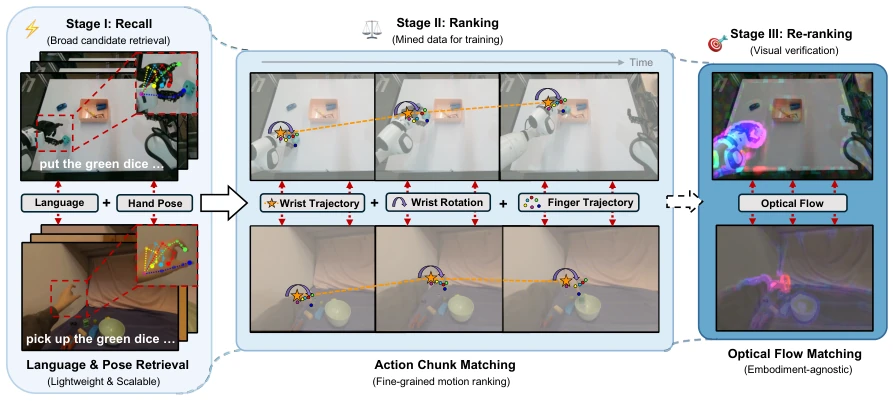
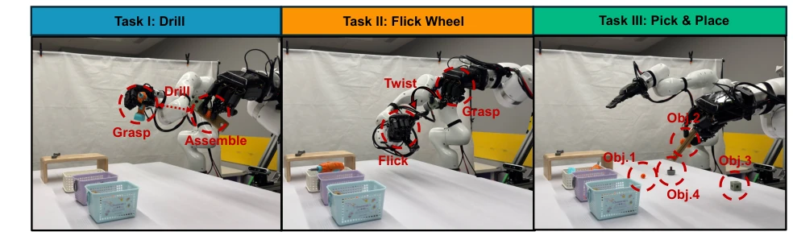
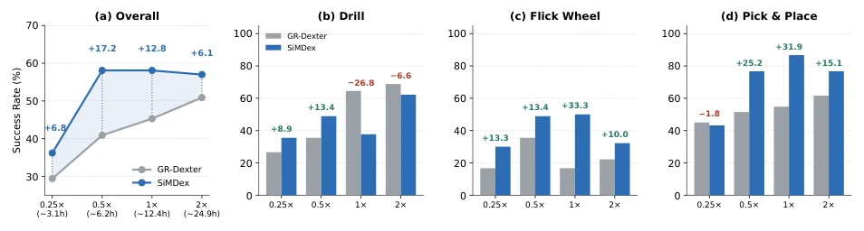
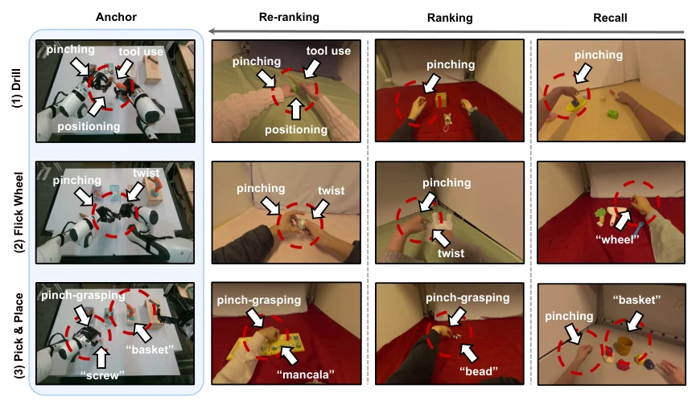

This paper turns VLA post-training data filtering into an industrial-grade recommendation system; the approach is quite bold. SiMDex avoids fancy architecture modifications, instead mining 1.5 million "high-quality samples" from 32 million human videos, directly boosting dexterous manipulation success rate from 47.7% to 61.1%; this cost-performance ratio is much higher than simply stacking data. However, it essentially relies on kinematic similarity (hand pose, trajectory) for matching; capturing deep physical interactions like contact force and object state is still somewhat weak. Although using optical flow maps for re-ranking can save the situation, the computational cost increases. Additionally, experimental scenarios are limited to industrial assembly; if switched to a kitchen scenario, whether this "recommendation algorithm" can still precisely feed remains questionable. Overall, it's about throwing less garbage and picking more substantial dishes when feeding large models, but the standards for picking dishes need further refinement.
The data bottleneck for robot dexterous manipulation is a critical flaw; real-world collection is costly and has poor portability, leading researchers to turn to massive human first-person videos [21, 35, 36]. But the problem is that human video libraries (e.g., Ego4D [14]) are extremely heterogeneous, mixed with irrelevant activities like cooking and sports; blindly training on full volume dilutes task supervision signals. Existing data filtering methods are mostly limited within robot datasets [2, 18], or only retrieve in small-scale human video libraries [37, 53], and often require modifying policy architectures. SiMDex aims to solve fine-grained task-aware retrieval problems for large-scale cross-embodied data (tens of millions), without modifying VLA architecture, directly utilizing human videos collected during the pre-training stage for secondary mining, achieving "collect once, gain twice". Existing work such as CUPID [2] and Re-Mix [18] mainly optimizes robot data mixing weights, while methods like R+x [37] retrieve human videos but only as auxiliary input. SiMDex fills the gap for large-scale, fine-grained, no-architecture-change retrieval, emphasizing that in the VLA post-training stage, selection is more important than scale.
方法Method
核心是构建一个无形态差异的统一动作空间。通过腕部局部重定向（Wrist-local retargeting），将机器人和人类的手部状态映射到共享的 42 维动作空间（腕部增量 + 指尖位置），机器人特有维度（46 维）通过掩码隔离。具体而言，动作空间定义中，指尖位置相对于腕部局部化（q_loc = T^-1_t q_t），腕部动作定义为当前帧内的局部增量（d_t），确保对工作空间位置不变。数据检索采用三级级联架构：Stage I Recall 基于语言嵌入和初始指尖姿态做粗粒度召回；Stage II Ranking 利用腕部轨迹、旋转波形和指尖轨迹进行细粒度运动相似度排序，并去重；Stage III Re-ranking 引入光流（Optical Flow）进行跨具身验证，消除纯运动学匹配带来的误检。训练时，人类数据仅监督共享维度，机器人数据监督全维度，通过 Masked MSE Loss 实现统一训练。这种设计避免了复杂的跨具身对齐模块，在 3200 万样本规模下保证了检索效率。
The core is constructing a unified action space with no morphological differences. Through wrist-local retargeting, mapping robot and human hand states to a shared 42-dimensional action space (wrist increment + fingertip position), robot-specific dimensions (46-dim) are isolated via masking. Specifically, in the action space definition, fingertip position is localized relative to the wrist (q_loc = T^-1_t q_t), wrist action is defined as local increment within the current frame (d_t), ensuring invariance to workspace position. Data retrieval adopts a three-stage cascade architecture: Stage I Recall performs coarse-grained retrieval based on language embeddings and initial fingertip pose; Stage II Ranking uses wrist trajectory, rotation waveform, and fingertip trajectory for fine-grained motion similarity sorting and deduplication; Stage III Re-ranking introduces Optical Flow for cross-embodied verification, eliminating false positives brought by pure kinematic matching. During training, human data supervises only shared dimensions, robot data supervises all dimensions, achieving unified training via Masked MSE Loss. This design avoids complex cross-embodied alignment modules, ensuring retrieval efficiency at the 32 million sample scale.

Figure 1 Overview of the SiMDex pipeline. Given robot demonstrations (anchors, top) and a large-scale pool of egocentric human candidates (target, bottom), SiMDex retrieves similar human samples through a three-stage cascade of increasing computational cost (denoted by deepening shades). Stage I (Recall) broadly retrieves candidates via language and hand-pose similarity. Stage II (Ranking) scores candidates by fine-grained motion similarity—wrist trajectory (wrist position along the orange path), wrist rotation (purple arc), and finger trajectory (colored fingertip dots); its deduplicated output forms the mined subset used for VLA training. Stage III (Re-ranking) provides an embodiment-agnostic verification via optical flow. Red arrows denote candidate comparison.
Tested on three dexterous tasks: Drill, Flick Wheel, Pick & Place. Baseline uses equal amount of randomly sampled human data; SiMDex uses only 1.49M samples (<5% pool) to improve overall success rate by 13.4%. Flick Wheel task improvement is most significant (24.5% -> 45.5%), proving fine-grained action mining is effective. Ablation experiments show that when robot data is scarce (0.25x-0.5x), SiMDex advantage is largest, maintaining 57-58% performance baseline, while baseline drops sharply with data reduction. For the Drill task, SiMDex is slightly inferior when robot data is abundant, indicating that if the human pool lacks high-quality similar demonstrations, mining may introduce noise. Visualization indicates optical flow re-ranking effectively corrects kinematic matching bias. Regarding datasets, robot demos are about 1.35M frames, human pool comes from EgoDex [19]'s 32M frames. Training adopts 1:1 mixing, 40K steps. Results table shows SiMDex improves by 29.4% on Pick & Place, nearly doubles on Flick Wheel. Data scaling ablation (Fig 3) shows SiMDex performs more robustly under low robot data budget, proving its value as a "data leverage", but under high budget if human pool lacks corresponding skills (e.g., Drill), benefits will drop or even be negative.

Figure 2 Overview of SiMDex evaluation tasks. We evaluate on three dexterous manipulation tasks: Task I: Drill (grasp, assemble, drill), Task II: Flick Wheel (grasp, twist, flick), and Task III: Pick & Place (grasp and place 4 objects with diverse geometries). Red annotations indicate key sub-task stages and target objects.

Figure 3 Data scaling ablation (RQ2). (a) Overall SR vs. robot-data scale: SiMDex sustains a stable floor (∼57–58%) while the baseline drops sharply with less data (largest gain +17.2 at 0.5×). (b--d) Per-task SR (∆above bars). Drill reverses sign—SiMDex helps under scarce robot data but trails when it is abundant. All results use a single round, so the 1× column differs slightly from Table 1 (two-round average).

Figure 4 Qualitative visualization of the SiMDex three-stage retrieval pipeline.